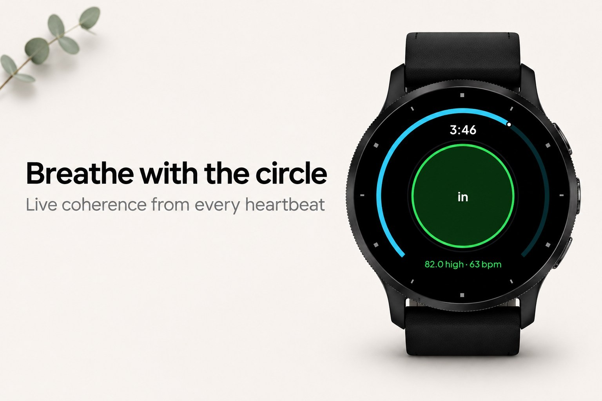
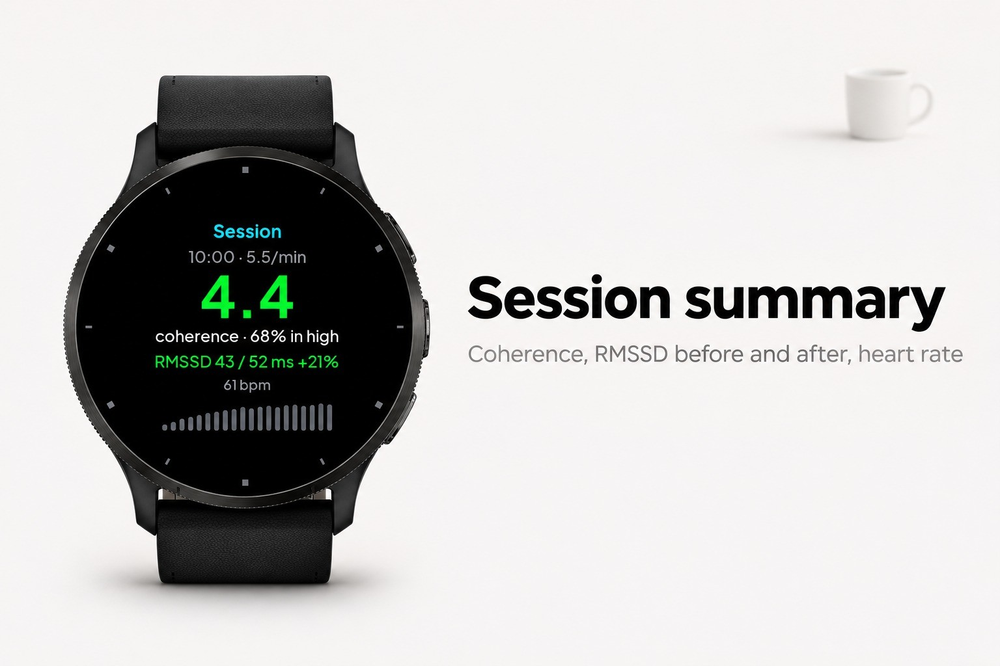
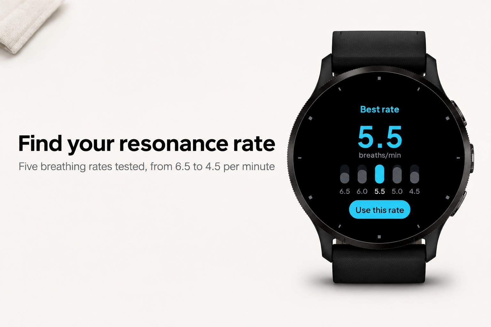
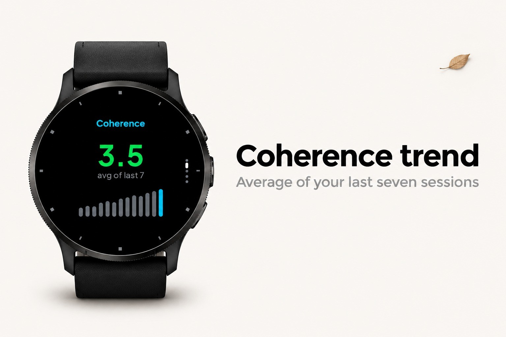

Vagal
HRV breathing coach with resonance rate test.





Vagal is a breathing coach that listens to your heart. It reads the time between every heartbeat from the wrist sensor or a chest strap, and every five seconds it works out how strongly your heart rhythm rises and falls with your breath. That coherence score colours the breathing circle while you follow it, so you can see the moment your breathing and your heart fall into step.
Start with the resonance test: ten minutes, two at each of five breathing rates from 6.5 down to 4.5 per minute. Vagal compares the heart-rate swing and low-frequency power at each rate and suggests the one where your rhythm responds most. After that, daily sessions run at your rate with a gentle vibration at every breath, a one-minute calm reading before and after to show your RMSSD change, and a trend over your last sessions. For relaxation and training only, not a medical device.
What it does
- Live coherence score from beat-to-beat intervals, updated every five seconds over the last 64 seconds
- Resonance test across 6.5, 6.0, 5.5, 5.0 and 4.5 breaths per minute, with a score for each rate
- Breathing circle with adjustable inhale:exhale ratio and a soft vibration pacer you can follow with your eyes closed
- RMSSD before and after each session, compared with your own seven-session baseline
- Session summary with time in high coherence, average heart rate and a coherence curve
- Coherence and RMSSD trends, day streak, weekly minutes goal
- Optionally saves each session as an activity with a coherence chart in Garmin Connect
- Five languages and a glance with your rate, last score and weekly minutes
What it needs
- A watch that provides beat-to-beat heart data (wrist sensor or paired chest strap for the cleanest signal)
- Sit still during a session; no phone, no account, no internet